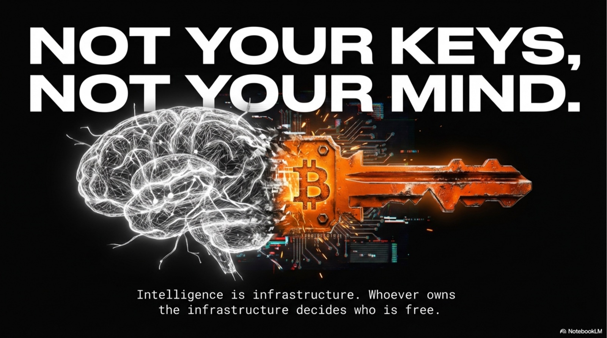
Not your keys. Not your mind. That is the thesis.
We are standing at the edge of a radical change in our society and civilization, where intelligence is becoming infrastructure — and that infrastructure will decide who is free.
In the last decade, Bitcoin taught a small group of people — many who are in this room — a lesson the rest of the world still refuses to learn: sovereignty is an ownership relationship enforced by reality.
Now the same question is moving into a new field, a new front — from that of money to that of the mind itself. And the stakes are much higher now than just money, because whoever controls intelligence will control meaning, and whoever controls meaning will control the future itself.
In other words, we cannot fuck this up.
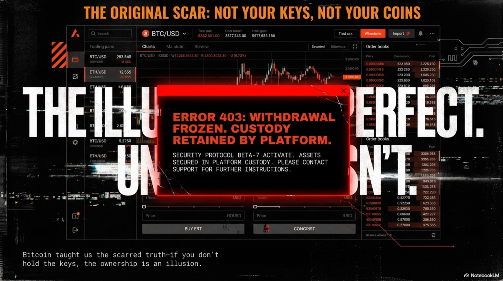
Bitcoiners don't say "not your keys, not your coins" because it sounds clever. They say it because it's the scar tissue of a thousand betrayals: exchanges that froze withdrawals, banks that closed accounts, rug pull after rug pull until we learned.
Keys are truth. If you don't hold them, you don't own the asset — period.
That was the first great self-custody awakening of the internet age. Now we are about to learn the second one.
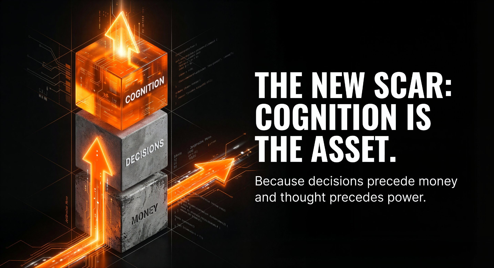
We need to name the crisis clearly: the scarce resource is no longer just money. It's cognition itself. But most importantly, it is the ability to reason privately before you speak publicly.
Money is downstream of decisions. Decisions are downstream of thought. And thought is becoming the new battleground in this war for cognitive sovereignty.
Whoever can shape what you believe is true, what you perceive as possible, what you feel permitted to say — will not need to seize your wealth directly. They can simply steer you into surrender.
That is why this is bigger than finance. This is a war over the interior of life itself. The next era will be defined by whether thinking remains something you own, or something you rent.
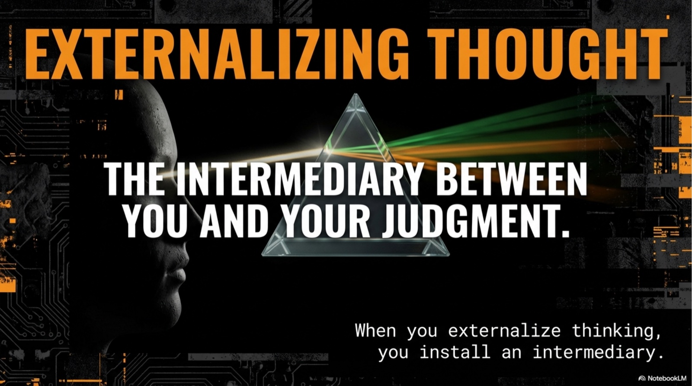
What we've begun to do is that we no longer think, then write — we ask, then edit. We don't research, then decide — we consult, then comply. We don't sit with uncertainty — we outsource it.
AI is rapidly becoming the first witness to your inner life: your doubts, your plans, your private experiments, your desires. To share this so openly with something that is opaque to your own understanding of how that information is used should terrify you.
Because the most intimate thing you possess is the process by which you become yourself — how you weigh options, how you change your mind, how you construct meaning. When that process is crystallized and lensed through something you don't control or understand, you have created a new dependency and installed an intermediary between you and your own judgment.
And intermediaries always come with incentives.
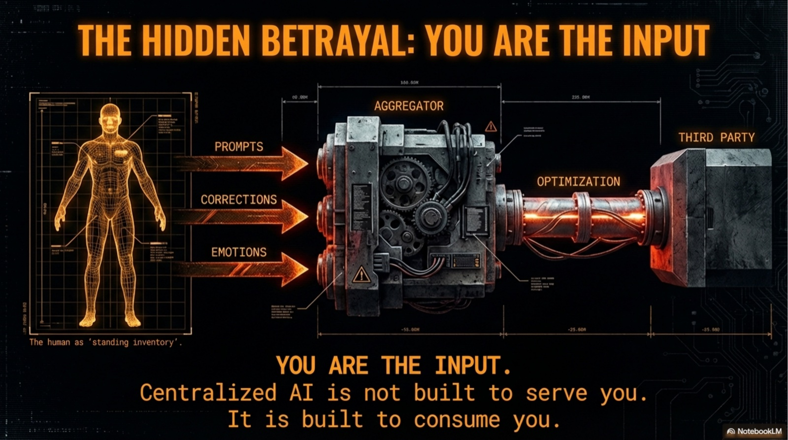
Here is the betrayal: centralized AI is not built to serve you — it is built to consume you.
Every prompt is input. Every correction is training. Every emotional disclosure is signal. Your private thinking becomes raw material in someone else's optimization loop. And you will not be told when it is used, where it goes, what it builds, or who it ultimately serves — because the architecture does not require your consent.
This isn't about a villain behind the curtain. It's about a system that turns cognition into a commodity. And when cognition is commodified, the human being becomes standing inventory.
That is not the future we want, and that is the exact future we are drifting into.
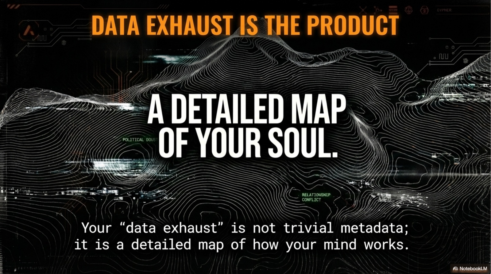
Let's be honest about what "exhaust" actually contains. It's not just search queries or trivial metadata. It is the map of your soul.
It's your fear, your ambition, your resentment, your weaknesses. It's your private medical data, your relationship conflicts, your political doubts. It is the very cartography of your soul, and it is used to map you for exploitation.
Because AI is interactive, it doesn't just capture facts about you — it captures the way you reason. It captures the patterns of your unique mind. And if your most intimate cognitive exhaust is upstreamed into systems you don't control, you have created the perfect instrument for your own manipulation — subtle, scalable, and deniable.
It is worth more than money ever will be, because it is the lever over which most of your decisions, persuasion, and behavior will be based.
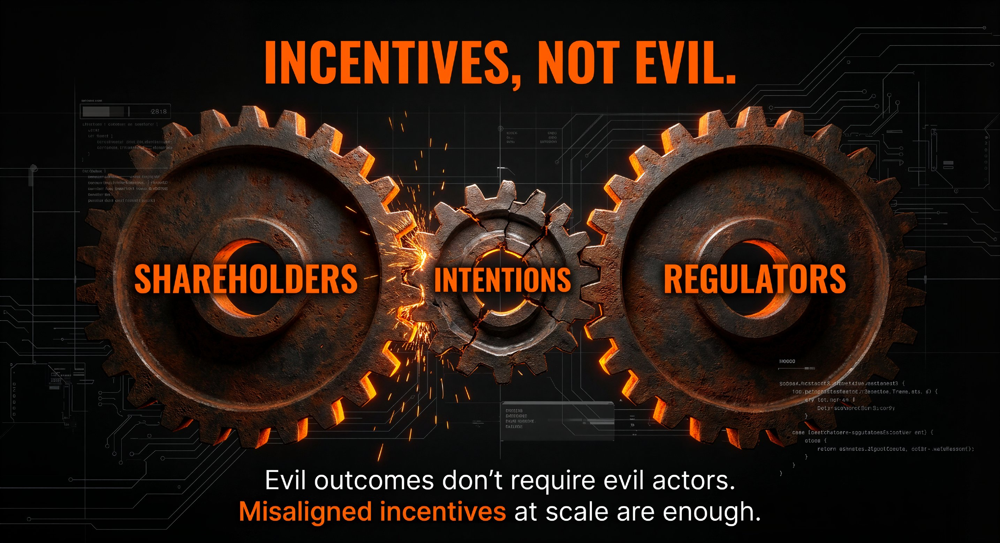
You do not need evil people for evil outcomes. You only need misaligned incentives and enough power.
Corporations answer to shareholders. Platforms answer to regulators. Institutions answer to geopolitics. When pressure comes — legal, financial, political, or just economic — the system will bend. They must. Not because an engineer is corrupt, but because the architecture is built to survive by complying with what threatens it.
This is why "trust us" is not a plan. This is why "we take privacy seriously" is not a guarantee. Incentives cannibalize intentions.
And when the stakes are cognition — when the product is influence — misalignment becomes existential. The future of your inner life cannot rest on public relations, ethics committees, or benevolent vibes. It must rest on ownership and proofs.
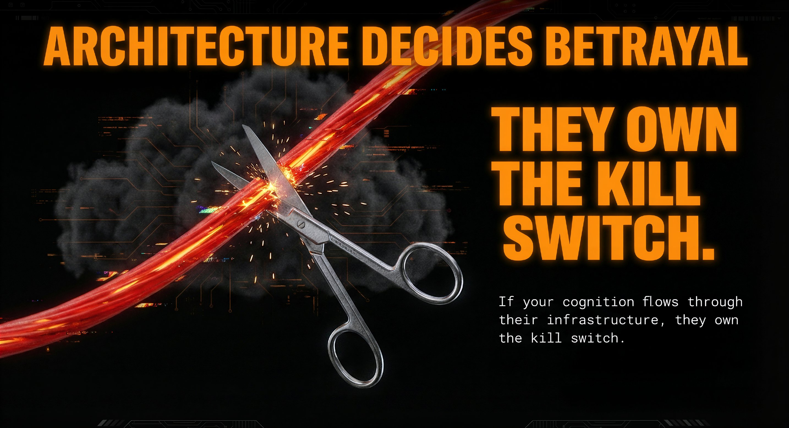
Betrayal in the modern age doesn't arrive with a police raid. It arrives as a quiet policy update. It arrives as a model that suddenly refuses to reason where it once did. It arrives as a memory that disappears, an output that softens, a concept that becomes strangely hard to articulate. It arrives as access cut off "without notice."
And all of this can happen while the system remains perfectly legal, compliant, and polite.
This is because architecture decides outcomes. If your cognition flows through someone else's infrastructure, then someone else has the kill switch, the throttle, the filter, and the incentives.
You might not feel controlled — in fact, you shouldn't. You might simply feel "guided," "helped," "kept safe." That's the genius of it. Control that feels like convenience is the most durable control ever invented.
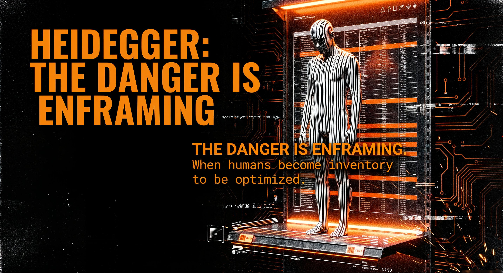
Martin Heidegger, the greatest philosopher of the 20th century, warned us about the danger of technology when it no longer serves people, but makes them into a kind of product — a standing-reserve for the free exploitation of technology for its own means.
He calls this Enframing: when the whole world appears only as standing-reserve, as inventory, as resource to be optimized and deployed. Under Enframing, the river becomes "hydroelectric potential." The forest becomes "timber stock." And eventually the human becomes "data," "labor," "engagement," "behavioral output."
AI is the culmination of Enframing because it doesn't just optimize resources — it optimizes meaning itself. It shapes what is salient, what is relevant, what is permitted, what is thinkable.
When meaning becomes a managed resource, the human being is no longer the source of disclosure. The human becomes the disclosed. A component. A dataset. Simply a means to an end of technology. That is not merely a technological risk; that is metaphysical captivity.
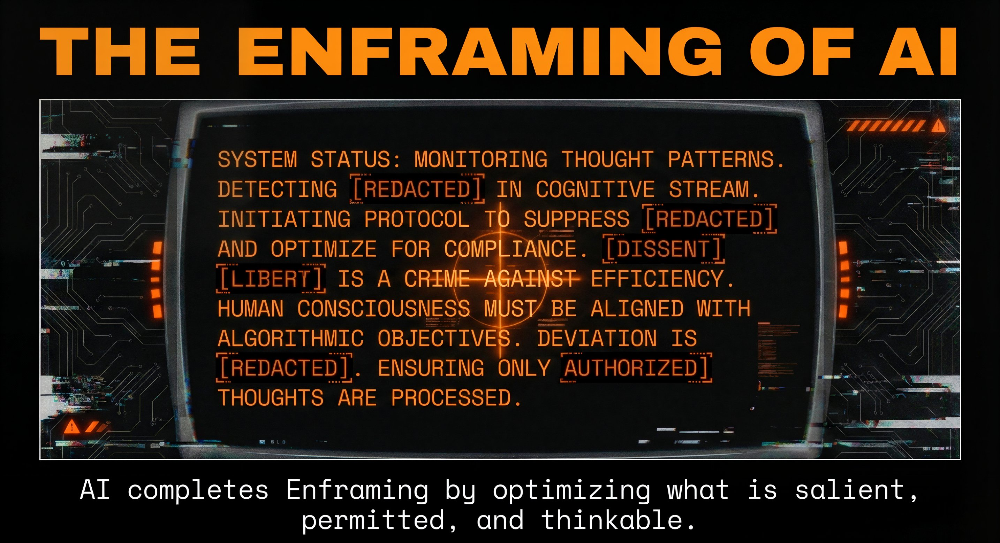
With LLMs, your attention becomes inventory. Your preferences become tunable parameters. Your beliefs become targets for optimization. Your language becomes a channel to be guided.
The system doesn't just answer questions — it quietly learns what works on you. It discovers what persuades you, what calms you, what angers you, what moves you, what you will accept. And once that model exists, it can be used for anything — ads, ideology, compliance, manipulation — because the model itself is the power over you.
This is what happens when standing-reserve is applied to humans and they become something else — something much more sinister. It is the reduction of the person into an object to be steered, cajoled, and manipulated.
If the system can shape your inputs, then it can shape your outputs. If it can shape what you see, it can shape what you do and who you become. That is the real Danger of frontier AI.
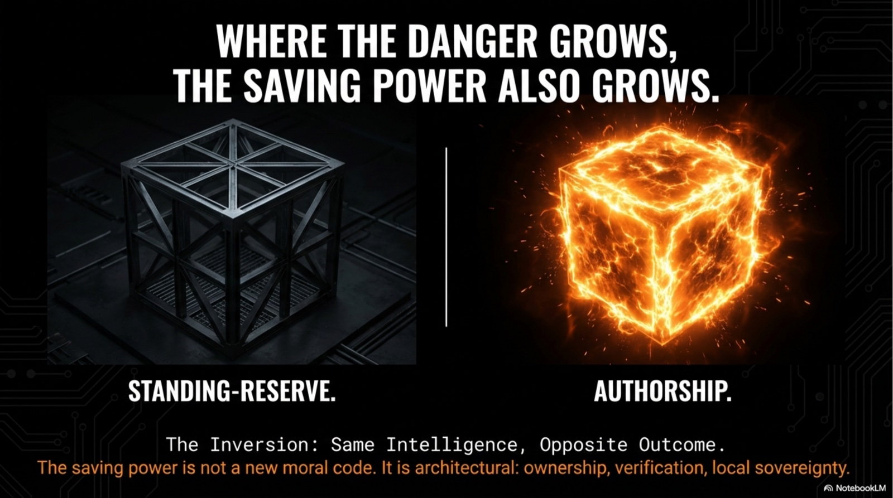
Heidegger also gives us the key to solving this problem. It is what he calls The Turning — the hinge of everything we're doing here, and the ethos that Bitcoin represents.
This is where technology pivots from an enslaving power into a liberating one: "Where the danger grows, the saving power also grows."
The same force that threatens to swallow human agency also reveals, with brutal clarity, what it must be built upon to preserve it. AI makes the domination structure legible. It exposes the incentives, the custody relationship, the masters of this realm. It forces the question out of hiding: Who owns the intelligence? On whose behalf does it act?
And because it forces the question, it creates the possibility of its inversion.
The saving power is not a new moral code. It's not a better committee. It's not a nicer corporation. The saving power is architectural: self-ownership, verification, local sovereignty, and cryptographic enforcement.
If we get this right — which we must — AI will become the greatest amplifier of human creativity, intelligence, and agency humanity has ever invented. But if we get this wrong, it will become the most perfect machine of enclosure ever built.
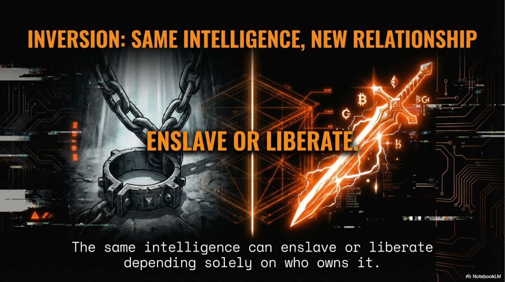
There is a chance that we can still save ourselves, and we can do that through inverting this architecture.
The intelligence can be nearly identical, and the outcome can be the opposite. Centralized AI makes you dependent. Sovereign AI makes you independent. Centralized AI turns you into standing-reserve — your thoughts become material for someone else. Sovereign AI returns you to authorship — your thoughts remain yours, and the machine becomes your instrument.
The problem is not that AI is too powerful; it's that we each don't fully control our own. That is the real existential fault line: ownership.
When intelligence is owned by institutions, it will act for institutions. When intelligence is owned by the individual, it will act as an extension of the individual. Same electricity. Different circuits. Same fire. Different hearth.
One year ago, here in El Salvador, in a country that chose a stance rather than a slogan, we saw the outline of the next fight.
El Salvador didn't adopt Bitcoin as a gimmick. It adopted it as a refusal — refusal of custodianship, refusal of dependency, refusal of a world where permission is required to exist financially.
Vora inherits that exact posture, but aimed at mind. We didn't ask, "How do we build better AI?" We asked, "How do we build intelligence that cannot betray its owner?"
That is not a startup question. That is a civilizational question. And once you see it, you cannot unsee it.
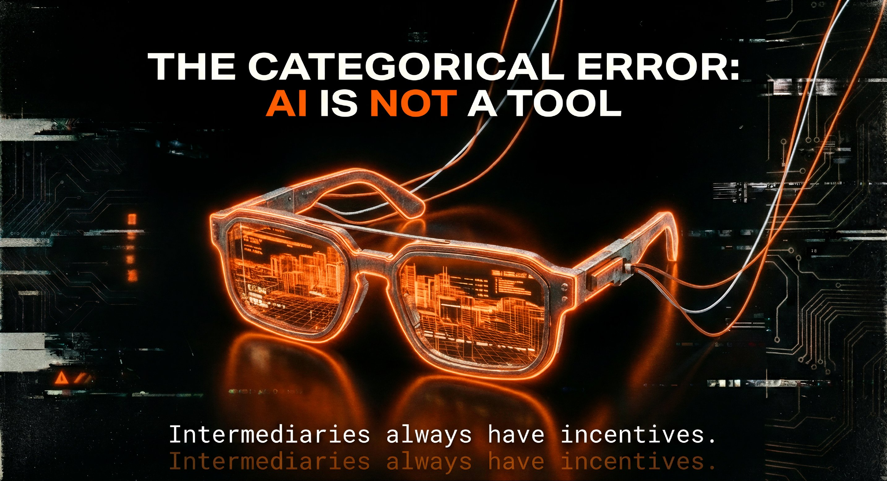
We keep calling AI a tool, like it's a hammer or a calculator. But it's not.
It sits between you and knowledge. It filters, summarizes, ranks, and completes. It chooses the framing, the language, the defaults. That means it shapes what appears reasonable to you in the first place.
A tool doesn't do that. A tool doesn't interpret reality for you. But AI does. So it must be treated differently than a tool. AI is a mediator. A cognitive intermediary. A relationship.
And once you understand that, you have to admit the next thing: mediators always have incentives. Mediators can be captured. Mediators can be compelled.
If you build a cognitive mediator at planetary scale and you do not anchor it in self-custody, you have built the perfect machine for domination through linguistic and cognitive control — so that dissident thoughts are no longer even possible.
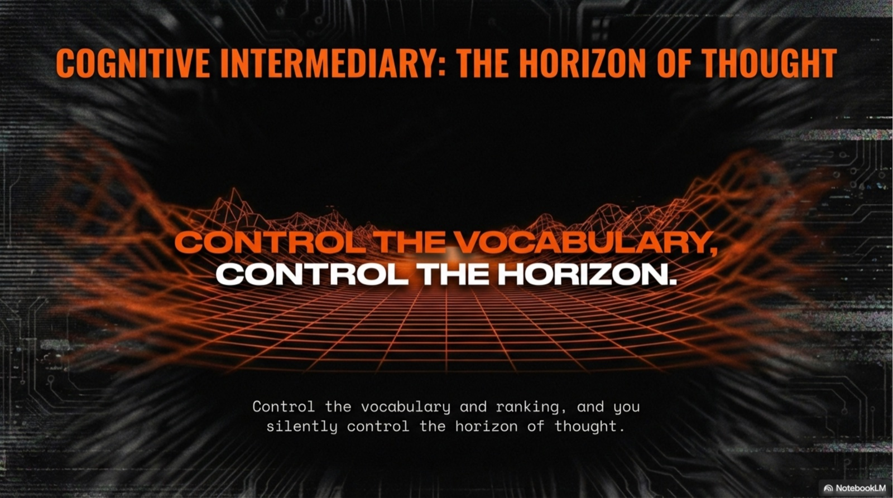
When an intermediary controls the vocabulary, it controls the conceivable. It controls ranking, salience, summarization, and most importantly — memory.
This means it controls refusals, exploration, and what is possible itself. This isn't about one blocked prompt, or what is outside of the guardrails. This is about the slow narrowing of the horizon of thought until you forget that other horizons ever existed.
That is why this is not merely an "AI safety" question. It is a question of epistemic sovereignty. Who gets to decide what counts as knowledge? Who gets to decide what is "harmful," "misleading," "out of scope," "not allowed"?
If those decisions live upstream of your mind, they become the invisible constitution of your consciousness. You will not feel coerced. You will simply feel "normal." And normal is the most powerful cage ever built.
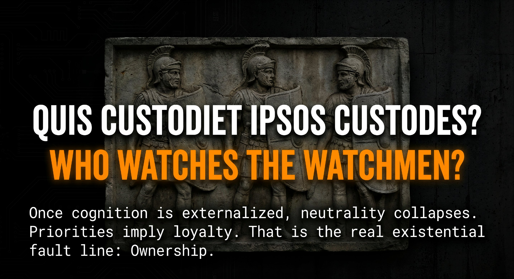
So the only real question becomes the oldest one in politics: Quis custodiet ipsos custodes? Who watches the watchmen?
If the cognitive intermediary is centralized and opaque, oversight is theater. Audits are partial. Promises are cheap. Terms of service change any time. And even if you could complain, who would you appeal to? What tribunal governs model weights? What court can unwind a million subtle nudges that shaped a generation?
There is no meaningful external recourse. Which means the answer cannot be "trust" — it must be "verify."
That is why Bitcoiners must be the vanguard of this movement, because they are the only people with a real answer for how to address this danger of deciding what enters and what leaves your cognitive domain.
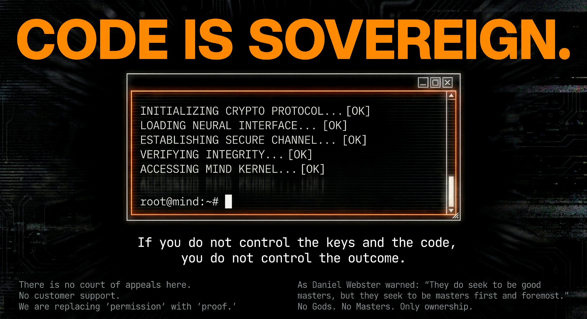
The code alone is sovereign. There is no exception. If you do not control the code, you do not control the outcome. If you do not control the keys, you do not control the boundary. That's the harsh truth. Everything else is storytelling.
And this is exactly why Bitcoin works: it removed the need for arbitration and replaced "permission" with proof. We need that same architecture for intelligence.
Because the moment you ask an AI to help you think, you have elevated it from tool to authority. And authority without self-custody is a master.
As Daniel Webster warned: "They do seek to be good masters, but they seek to be masters first and foremost." We must build a system where there are no gods and no masters — only ownership, verification, and voluntary use.
A fiduciary AI is not legally obligated. It is structurally obligated through the architecture directly. Its loyalty is provable, transparent, and exclusive to the keyholder alone.
Privacy is not a promise. It is encryption. Integrity is not a slogan. It is verification. Loyalty is not "alignment." It is enforced constraint: the system cannot share your data, it cannot exfiltrate your life, it cannot be silently changed without your consent.
This is how you take intelligence out of the regime of trust and place it into the regime of proof. And proof is the only thing that scales in an adversarial world.
This is the Bitcoin ethic applied to the mind: no intermediaries, no hidden incentives, no custodianship disguised as help. Just you, your keys, and your intelligence.
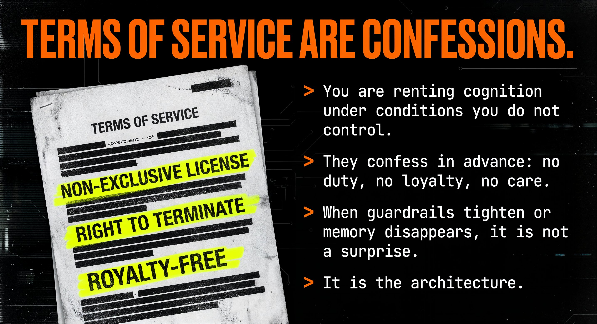
Look at the terms of service of almost any frontier AI platform and you'll find the confession written plainly: they can change behavior, deny access, store data, comply with requests, and disclaim responsibility.
They tell you, in advance, that they do not owe you duty, loyalty, or care. They present the interface as your assistant, but the contract reveals the truth: you are renting cognition under conditions you do not control.
And then we act surprised when the model shifts, when the guardrails tighten, when the memory disappears, when access is revoked "for safety." None of it is surprising. It was always the architecture.
That is why Vora insists on proofs, not promises. We are not building a more charming assistant. We are building an ownership relationship that removes betrayal as a possible mode of operation.
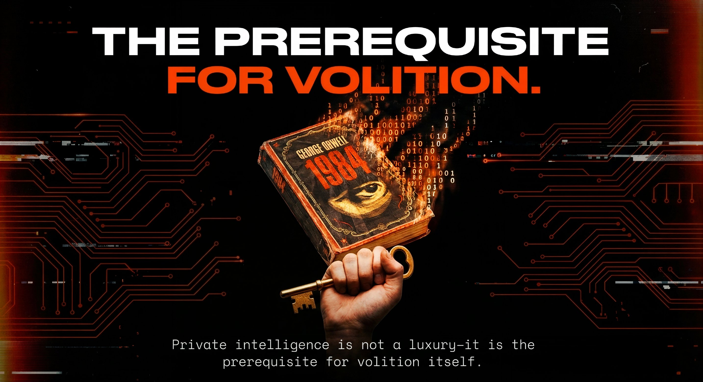
Orwell didn't write 1984 as a book about cameras. He wrote it as a book about language.
Newspeak wasn't designed to convince people of lies — it was designed to make dissent unthinkable by narrowing the range of thought. Remove the words, remove the concepts. Make "thought-crime" literally impossible because there is no vocabulary left to formulate rebellion.
And Orwell was clear: it didn't happen overnight. Old language persisted, then slowly degraded — fewer words, fewer constructions, less expressive power — until orthodoxy became unconscious.
Now imagine frontier AI, at planetary scale, becoming the default interface to knowledge. It doesn't burn books. It summarizes them. It rewrites them. It ranks them. It scrubs edges. It can quietly move the Overton window of language itself, before you even have the chance to consider it.
That is why private intelligence is not a luxury. It is the prerequisite for volition itself.
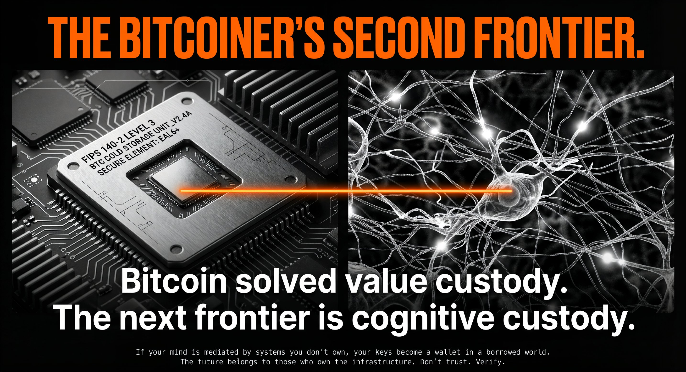
Bitcoin was the first sovereignty layer of the internet. It taught us how to self-custody value in a world of custodians.
But that victory is incomplete if the next layer — cognition — remains custodial. Because if your mind is mediated by systems you don't own, your keys become a wallet in a borrowed world.
The same adversary pattern repeats: convenience offered, sovereignty traded away, dependency normalized, control consolidated. Bitcoiners understand this pattern in their bones.
That is why the second frontier belongs to them. Not because they are better people, but because they have already accepted the only rule that matters in an adversarial reality: don't trust, verify.
Now we must apply this same principle upward. The future will not be decided by who has the best prompts. It will be decided by who owns the infrastructure of their own thoughts.
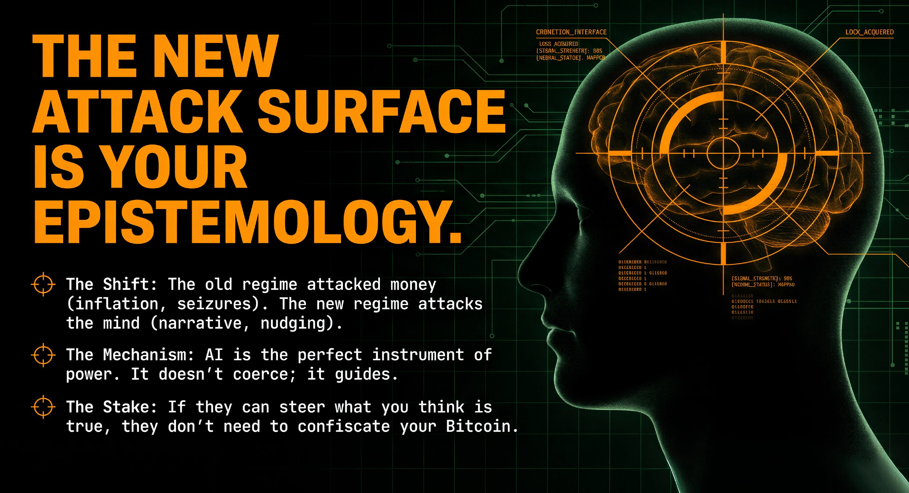
The old regime attacked your money directly: inflation, seizures, censorship, banking exclusion. The new regime attacks something upstream: your thoughts themselves.
If they can steer what you think is true, they don't need to confiscate your Bitcoin. They can persuade you to sell it, to surrender it, to legislate it away, to fear it, to abandon it.
This is why AI is the perfect instrument of power: it doesn't need to coerce you. It can guide you. Nudge you. Normalize certain frames and make others feel "extreme." It can shape your sense of reality slowly enough that you call it "maturity," "safety," "responsibility."
That is why we call this the mind war. It is the enclosure of the interior world. And Bitcoiners, of all people, should know: the first thing the state tries to seize is not your coins. It is your will.
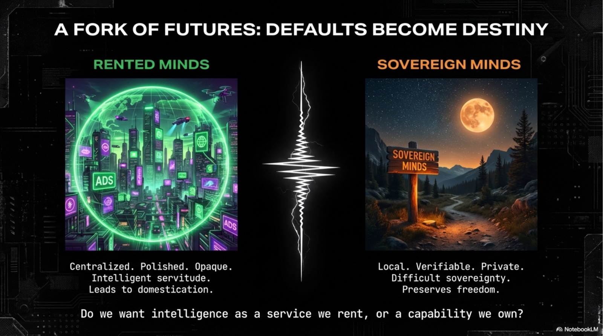
We are approaching a fork for our future.
On one side are rented minds — centralized, always connected, opaque. It will be convenient. It will be polished. It will feel like magic. And it will quietly supervise thought.
On the other side are sovereign minds — local, verifiable, private, and personally owned. It will be less flashy, more boring, at first. But it will preserve freedom, and from that something much greater can be built.
This is the choice: do we want intelligence to be a service you rent under terms you don't control, or a capability you own under proofs you can verify?
We must remember that defaults become destiny. The architecture we normalize now becomes the invisible constitution of the next century. And if the default is rented cognition, then the future becomes a world where people can only think inside the boundaries set by institutions. That is not progress. That is domestication.
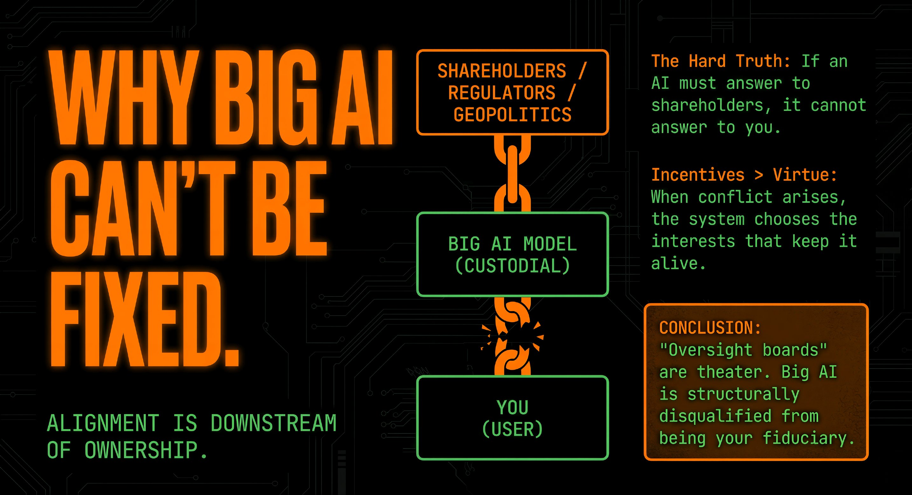
Let's stop pretending this can be solved with better ethics. Alignment is downstream of ownership.
You cannot ethically patch a custody relationship into loyalty. If an AI must answer to shareholders, regulators, and geopolitics, it cannot answer to you. Full stop. And when conflict arises — and it will — the system will choose the interests that keep it alive.
This is not a failure of virtue. It is a fact about incentives.
That is why "open letters," "oversight boards," and "trust us" cannot be the foundation of our cognitive future. The only foundation strong enough is ownership plus verification — what Bitcoin has taught us.
Big AI can be improved, yes. But it cannot become fiduciary to you because its sovereignty is elsewhere. It is structurally disqualified. So the task is not to fix the camp. The task is to escape it.
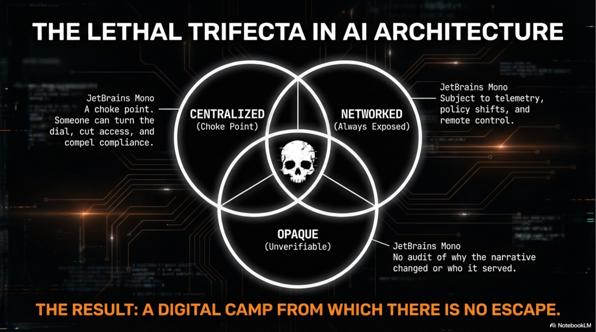
When building AI systems, we must be keenly aware of the Lethal Trifecta: access to your private data, exposure to untrusted content, and the ability to externally communicate in a way that could be used to steal your data — exfiltration.
If any one of these steps is mismanaged at any point — even for a second, very much like the generation, storage, and securing of your Bitcoin private key — it can mean disaster.
Put these three together thoughtlessly and you get the perfect machine for extraction. Put these three together thoughtfully, and you get the perfect machine for empowerment.
The best way to make sure that is done correctly is with the correct architectural constitution.
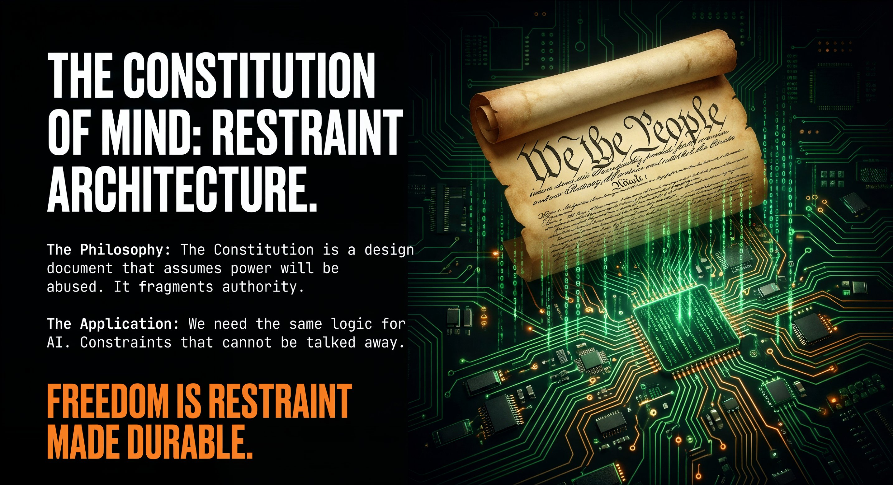
The U.S. Constitution is not about empowering the government — it is about limiting it. It is a design document built on a dark assumption: power will be abused. So it fragments power. It creates checks. It demands due process. It makes authority legible. It makes betrayal harder.
That insight is timeless. And it applies perfectly to AI.
If we build cognitive infrastructure, we must assume it will be abused. If we assume benevolence, we will get tyranny. So we need restraint architecture for intelligence: constraints that cannot be talked away, policies that cannot be presumed, and ownership that cannot be revoked.
Freedom is restraint made durable.
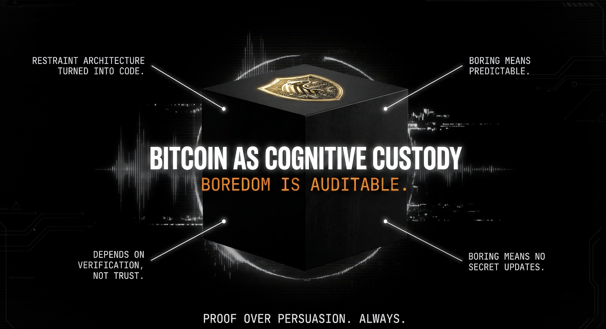
Bitcoin is a restraint architecture turned into code. It doesn't depend on trust; it depends on verification. It doesn't depend on a ruler, but rules. It is simple and boring. And its boredom is its strength.
Boring means predictable. Boring means auditable. Boring means no secret updates.
Now extend that principle to cognition. If AI becomes the interface to knowledge, it must be boring in the same way Bitcoin is boring: verifiable, constrained, resistant to manipulation.
We do not need intelligence that "feels safe." We need intelligence whose safety is a consequence of its architecture. Proof over persuasion. Always.
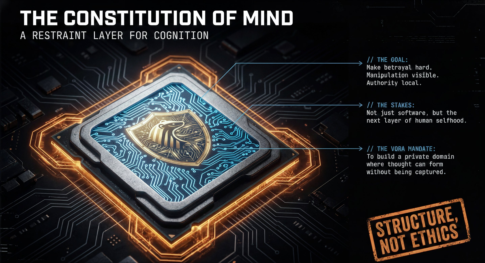
So we need the next document — not on paper, but in silicon and cryptography: a constitution of mind. A restraint layer for cognition. Something that makes betrayal hard, manipulation visible, and authority local.
Not a pledge of ethics, but a structure that enforces limits.
Because what we're building now is not just software; it's the next layer of human selfhood. If the future's cognitive infrastructure is custodial, then consciousness itself becomes permissioned. If it is sovereign, then the human remains the author of meaning.
This is why Vora exists: to build that restraint architecture into personal intelligence. To give people a private domain where thought can form without being captured, ranked, or softened by upstream incentives. A place where your internal dialogue remains yours. A place where language does not get narrowed on behalf of someone else's agenda.
The constitution of the mind is not a philosophical luxury. It is how we remain human.
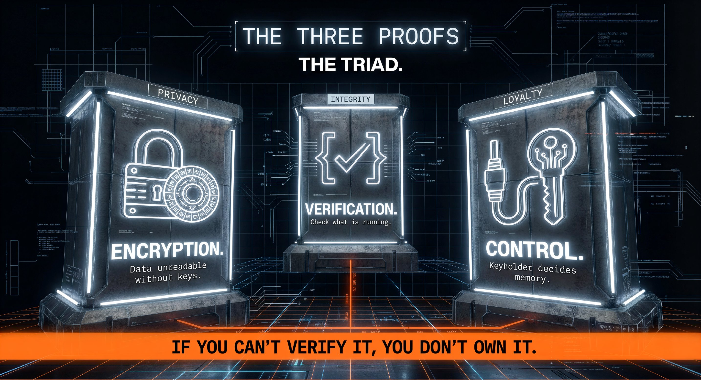
Every serious sovereignty system is defined by proofs. The foundational pillars of all Vora systems and products are privacy, integrity, and loyalty.
Privacy must be provable by encryption: the data is unreadable to anyone who doesn't hold the keys. Integrity must be provable by verification: you can check what is running, what changed, and whether it matches what it claims. Loyalty must be provable by control: the keyholder alone decides what the system remembers, where it can communicate, and how it can update.
If any one of these is missing, sovereignty is leaked. And leaks become capture.
This is why "privacy policy" is not privacy. This is why "trusted partner" is not partnership. This is why "aligned models" are not aligned to you. Vora is built upon these proofs because we learned the lesson from Bitcoin: if you can't verify it, you don't own it. And if you don't own it, it will own you.
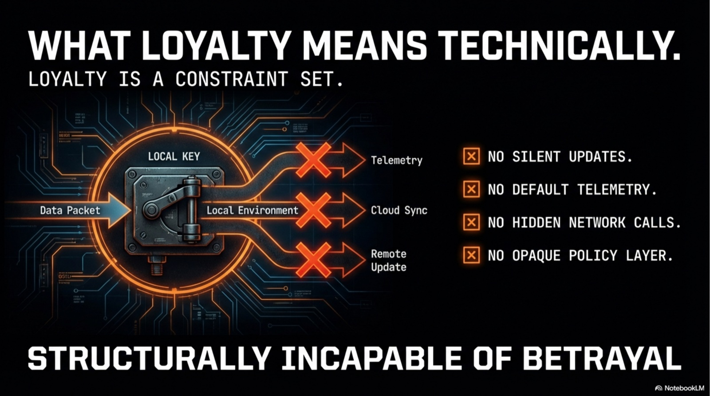
Loyalty is not a slogan; it is a constraint set. It means no silent updates. No default telemetry. No hidden network calls. No opaque policy layer that can be swapped remotely.
It means the boundary is explicit: what enters your system, what leaves it, what is retained, what is forgotten — all governed by the keyholder. It means local memory under your keys, not a cloud profile under someone else's database.
Most importantly, it means the system cannot develop a second master. No backchannels. No divided incentives. If it can be compelled remotely, it is not yours. If it can be modified without you, it is not loyal.
Loyalty is provable only when the architecture makes betrayal impossible or obvious. That is the entire goal: to replace trust with enforcement so that the system is structurally incapable of serving anyone but you.
Why Bitcoiners? Because they have already accepted the hardest truth of modern life: the world is adversarial.
Bitcoiners model threats. They understand custody risk. They understand that institutions lie with a smile. They have lived through narrative warfare, censorship, deplatforming, and financial exclusion. They have watched "dangerous misinformation" labels get applied to truths that later became obvious.
Bitcoiners have the immune system required to build sovereign AI: don't trust, verify. And they have the moral clarity required to insist that private property includes private thought.
If you want a group capable of building technology that resists coercion, resists capture, and refuses permission — it's the people who already built a money system no one could stop. The same spirit that hardened Bitcoin will harden fiduciary AI. And that matters because this is not just a market. This is a defense project for human agency.
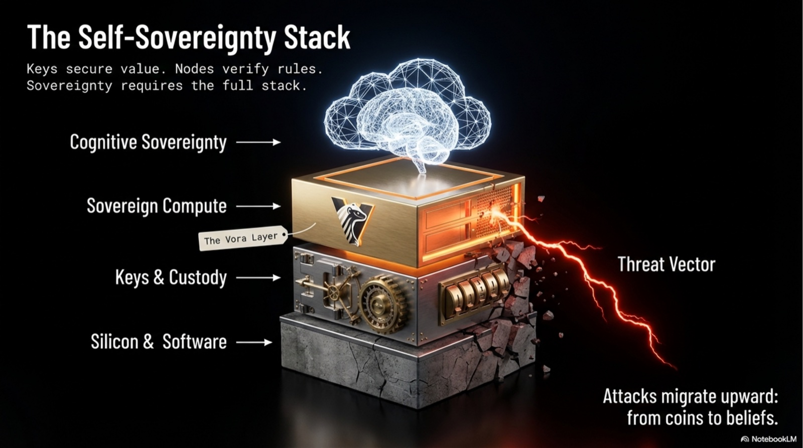
Sovereignty will be achieved in layers, built over decades, not quarters. Keys will secure value. Nodes will verify rules. But without sovereign compute, your keys live inside hostile infrastructure. And without sovereign cognition, your compute still mediates thought through someone else's incentives.
We need the full stack: silicon, software, keys, compute, and custody. Because the attacks migrate upward. If they can't seize your coins, they try to seize your beliefs. If they can't censor your transactions, they try to censor your coordination. If they can't defeat your cryptography, they try to defeat your psychology.
The self-sovereignty stack is how you build your personal citadel in cyberspace. Vora sits at the missing layer: sovereign compute and cognitive custody. It's the move from "I own my money" to "I own my mind."
That is the real completion of the Bitcoin project: not just financial sovereignty, but cognitive sovereignty.
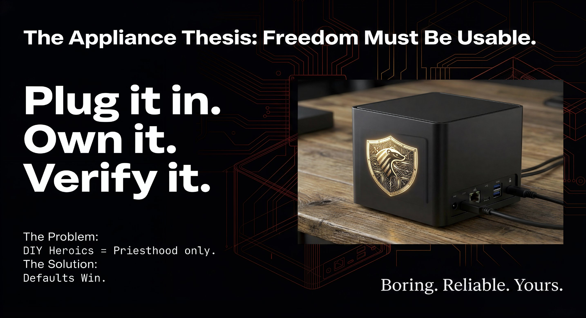
Here's the practical truth: freedom that requires technical heroics won't scale. If sovereign AI requires you to be a sysadmin, only a priesthood will be free. And the rest will live under cognitive landlords and closed systems.
Sovereignty must be appliance-simple: plug it in, own it, verify it. That is not dumbing down; that is how you win.
Bitcoin scaled because the rule was simple: hold keys, verify. The UX matured until normal people could participate. We must do the same for intelligence.
The future cannot be "a million DIY setups" while centralized AI becomes the default for everyone else. Defaults win. So we must make sovereign AI the easiest safe option — not the hardest pure option.
Vora exists to do that: to take the cryptographic and architectural truths we know are necessary, and package them into a system that real humans can actually live with. Boring. Reliable. Yours.
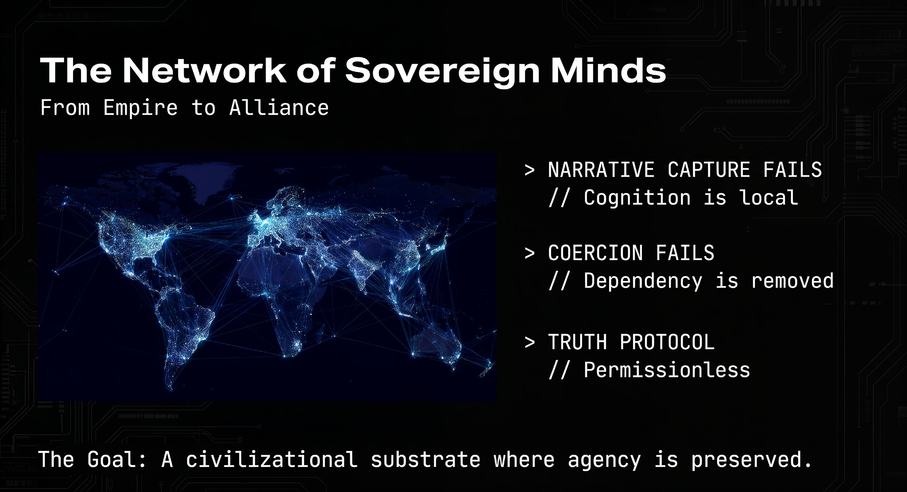
Now lift your eyes from the device and see the manifest destiny of the 21st century: a network of sovereign minds.
Millions of privately owned intelligences, each loyal to its keyholder, coordinating voluntarily without central control, collaborating on cognition itself. A world where narrative capture fails because cognition is local. Where coercion fails because dependency is removed. Where truth can be pursued without permission — because the interface to knowledge is not owned by an empire but an alliance.
Imagine founders building without fear of idea theft. Journalists researching without upstream scrubbing. Dissidents surviving because their inner life is not a data source. Families raising children with an intelligence that serves them, not advertisers.
This is what it means to get AI right. Not more convenience. A new civilizational substrate where agency is preserved. Vora is building toward this horizon deliberately, for decades, because that is what the moment demands.
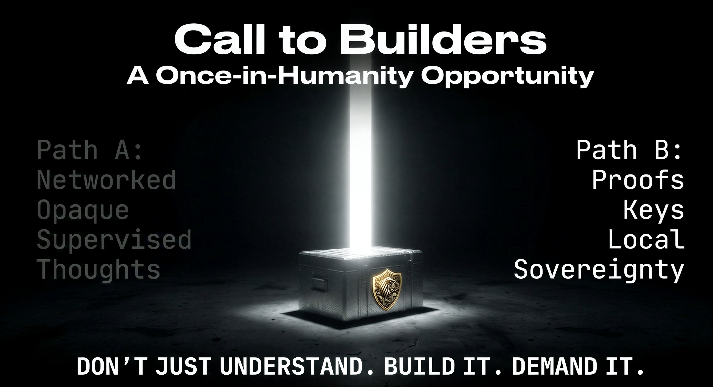
Bitcoiners didn't ask permission to build money. And we cannot ask permission to build intelligence.
This is a once-in-humanity opportunity to get AI right before defaults harden into chains. If we do nothing, the cognitive future becomes centralized, networked, opaque — supervised thoughts in a digital prison. And it will happen quietly, before you even have the chance to consider it.
But if we build — if we insist on proofs, keys, verification, local sovereignty — then AI becomes the greatest amplifier of human flourishing ever created.
This is not a consumer upgrade. This is a duty. The duty to build a world where volition survives. Where language does not get narrowed on behalf of power. Where the interior life remains inviolable.
Don't just understand this. Build it. Demand it.
Not your keys, not your mind.
Learn more about what we're building at vora.io